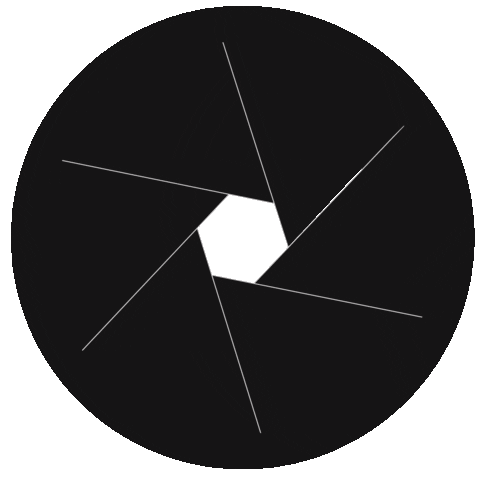
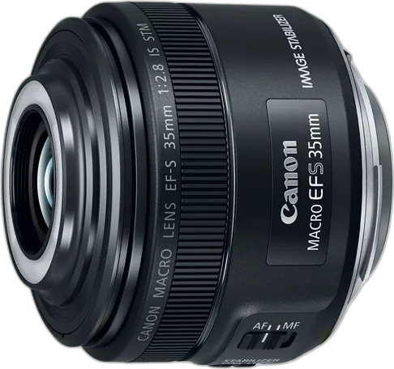
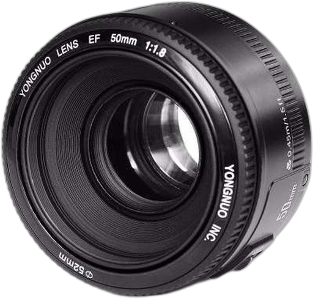
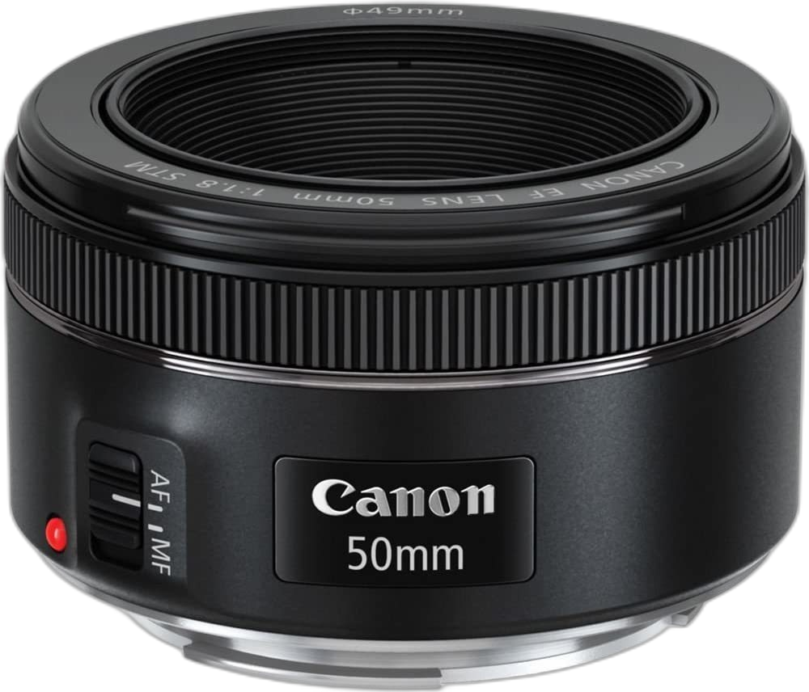
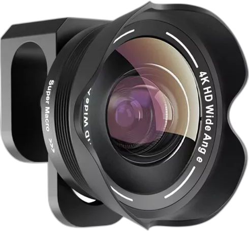
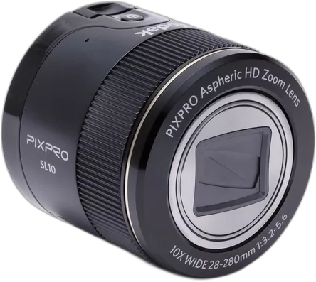
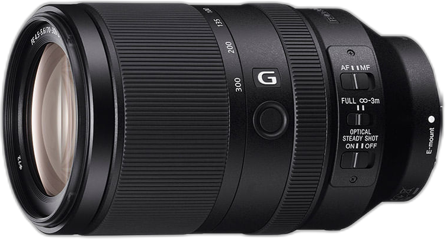
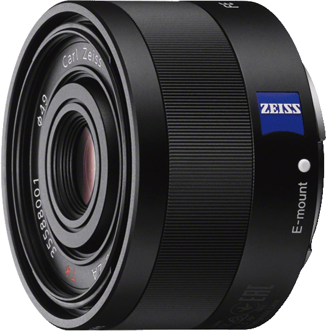

|  |
¿Cómo elegir un buen lente? Publicado el 5/05/2023 por @Lu1s Cuando se trata de capturar momentos inolvidables, la elección del lente adecuado puede marcar la diferencia. Existen diferentes tipos de lentes con distintas aperturas, y entender sus características es fundamental para tomar la decisión correcta. L... |
|  |
Ojo de águila de bolsillo Publicado el 01/04/2023 por @B1LL1E El lente de Canon Ef-s 35mm F/2.8 Macro es ideal para fotógrafos que buscan capturar imágenes a largas distancias con una calidad de imagen excepcional. Con su capacidad para ampliar la perspectiva permite enfocar detalles sorprendentes a kilómetros ... |
|  |
Captura el mundo con detalles precisos Publicado el 17/02/2023 por @Louie_Legend El lente Yongnuo 50mm Yn50mm F1.8 Canon Nikon tiene una apertura máxima de f/1.8, este lente permite una excelente entrada de luz para imágenes claras y nítidas. Su longitud focal de 50mm es perfecta para retratos y paisajes, mientras que su tamaño c... |
|  |
Lentes capaces de revelar belleza oculta Publicado el 11/02/2023 por @LuluLouis El lente Canon Ef 1.969 En F / 1,8 Stm con filtro UV de vidrio es capaz de capturar detalles impresionantes en situaciones de poca luz. Con su gran apertura, los sujetos pueden destacarse en un suave bokeh, revelando la belleza oculta de los objetos ... |
|  |
Transforma tu visión en fotografía Publicado el 09/02/2023 por @Zeyo El lente para cámara de celular de 20x Para Samsung e iPhone transforma tu visión en fotografía. Este lente de alta calidad permite una ampliación de imagen excepcional, capturando detalles impresionantes a largas distancias. Con su tamaño compacto, ... |
|  |
Apaga esas luces Publicado el 22/01/2023 por @Bill El lente JK Imaging Kodak Pixpro Smart Lens SL10 es la elección perfecta para tus fotografías. Con su diseño compacto y fácil de usar, este lente se adapta a cualquier dispositivo móvil, permitiéndote capturar momentos especiales en cualquier momento... |
|  |
Zoom para acercamientos dramáticos Publicado el 04/01/2023 por @Frantastic El lente con Zoom Teleobjetivo 70-300mm F4.5-5.6 Serie G Full Frame es perfecto para tomas dramáticas. Con su gran rango de zoom, este lente te permite capturar detalles únicos en tus imágenes. Desde retratos hasta paisajes, el lente es una herramien... |
|  |
Enfoque silencioso para situaciones sensibles Publicado el 03/01/2023 por @Ill_Bill El lente fijo de 35mm F2.8 Serie Zeiss Full Frame es la elección perfecta en situaciones sigilosas. Con el enfoque del lente puedes capturar imágenes sin perturbar el ambiente. Además, su distancia focal de 35mm y apertura de F2.8 te permite capturar... |